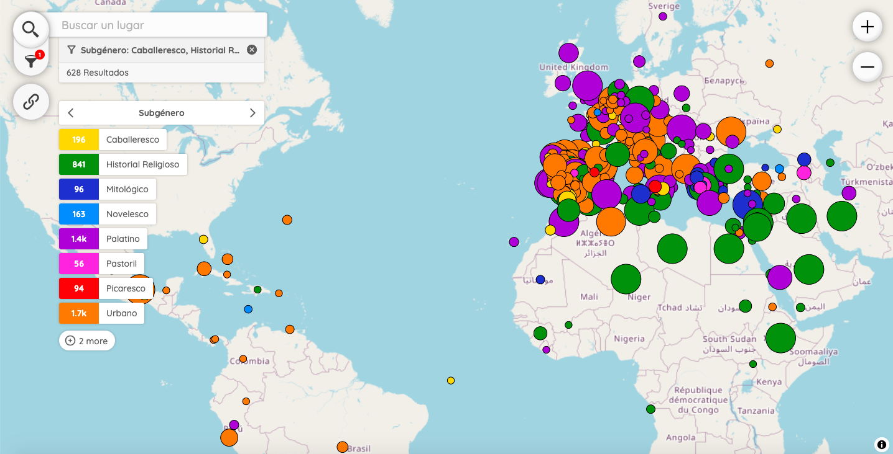
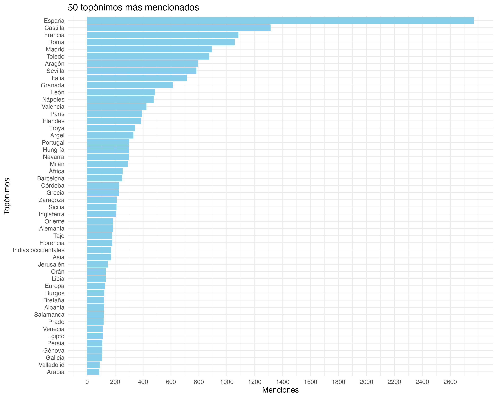
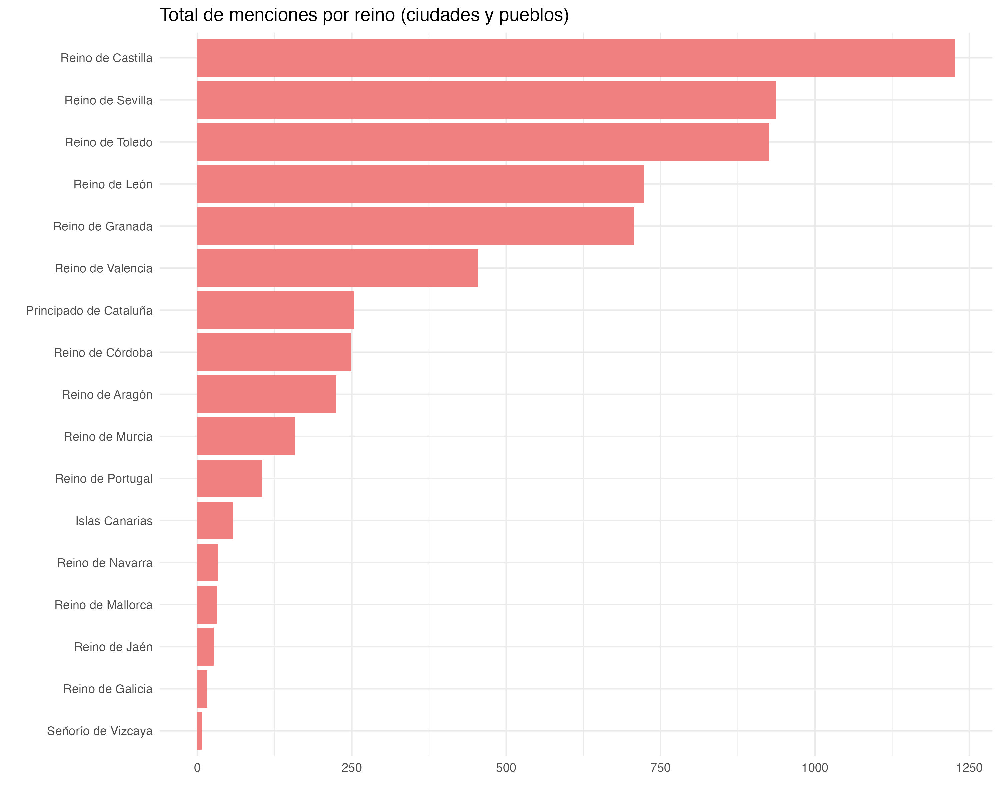
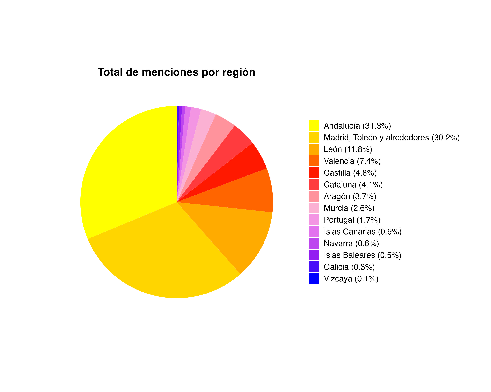
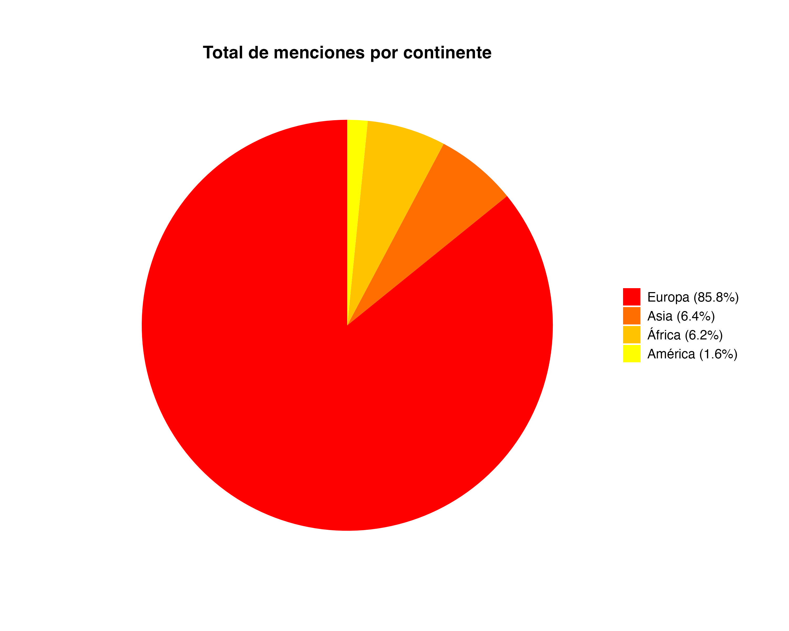

Mapping Lope: A Cartographic Exploration of the Comedia Nueva (2025–2027) es un proyecto de investigación posdoctoral dirigido por Miguel Betti y financiado por la beca Postdoc.Mobility del Fondo Nacional Suizo para la Investigación Científica (SNSF). Se enmarca en las actividades de innovación del grupo PROLOPE, bajo la supervisión de Sònia Boadas.
Combinando filología, geografía literaria y aprendizaje automático, el proyecto aplica herramientas de las Humanidades Digitales para extraer topónimos de las obras dramáticas de Lope de Vega, generar análisis estadísticos y crear mapas interactivos y dinámicos.
El proyecto tiene dos objetivos principales. En primer lugar, en el plano filológico, analizar el papel del espacio verbal, imaginado y diegético en este corpus, así como las relaciones entre la toponimia y la clasificación de las obras en diversos géneros y subgéneros. En segundo lugar, en el plano histórico, examinar la relación entre el uso de la toponimia y el contexto político, social y cultural del Siglo de Oro.
Los topónimos han sido extraídos automáticamente mediante el entrenamiento de un modelo de reconocimiento de entidades nombradas (NER) con la biblioteca Flair. El modelo más preciso (F1-score: 95%) permitió identificar más de 1000 nombres distintos de imperios, reinos, ciudades, villas, parques, calles, edificios y accidentes geográficos, en 364 obras.
El mapa presentado a continuación, desarrollado con la biblioteca Peripleo, permite a los usuarios explorar esta lista de topónimos y, gracias a su sistema de filtros, realizar búsquedas por lugar, género, subgénero, título de la obra y periodo o fecha de composición.

Para más información sobre el proyecto: Anuario Lope de Vega ↗
Estadísticas
Los gráficos que siguen se han desarrollado a partir de nuestra base de datos y mediante la biblioteca ggplot2 en R. Asimismo, se ofrecen estadísticas que reflejan la relevancia y distribución de cada topónimo o región geográfica en la obra dramática de Lope.



